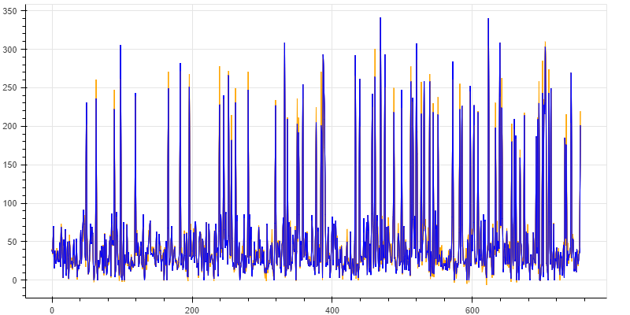

실업자 수 예측모델
LightGBM 모델은 이렇게 예측했습니다.
모델이 예측한
{{ location }}
지역의
{{ month }} 월
실업자 수는
{{ result }} 명
입니다.
이 모델의 성능은 다음과 같습니다.
평균절대오차(MAE) : 6.2
평균제곱오차(MSE) : 109.6
r2스코어: 0.97 입니다.
아래는 모델의 예측 결과 그래프입니다.
* 파란색 선이 실제 실업자 수, 주황색 선이 train 데이터를 바탕으로 모델이 예측한 실업자 수입니다.
(테스트 데이터를 대상으로 예측치는 평균적으로 적게는 6000명에서 많게는 1만명의 오차를 보였습니다.)

데이터분석 프로젝트
Made by
chris